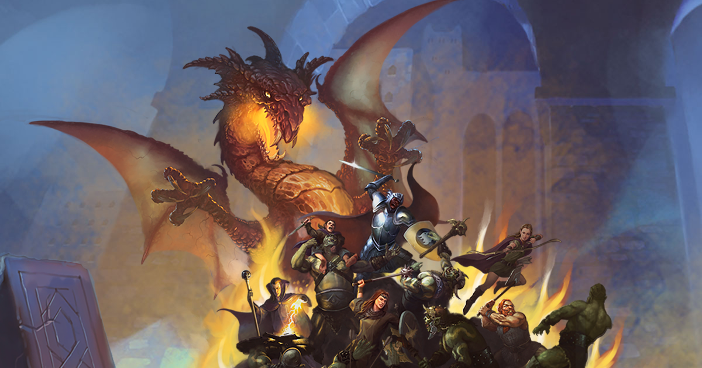
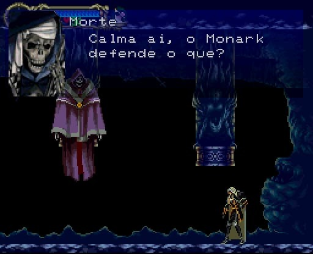
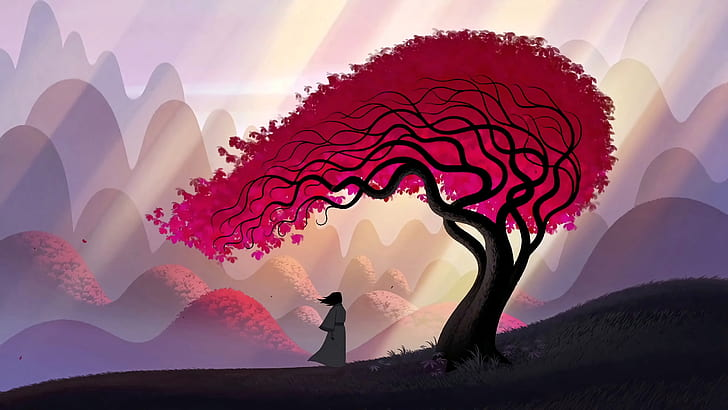
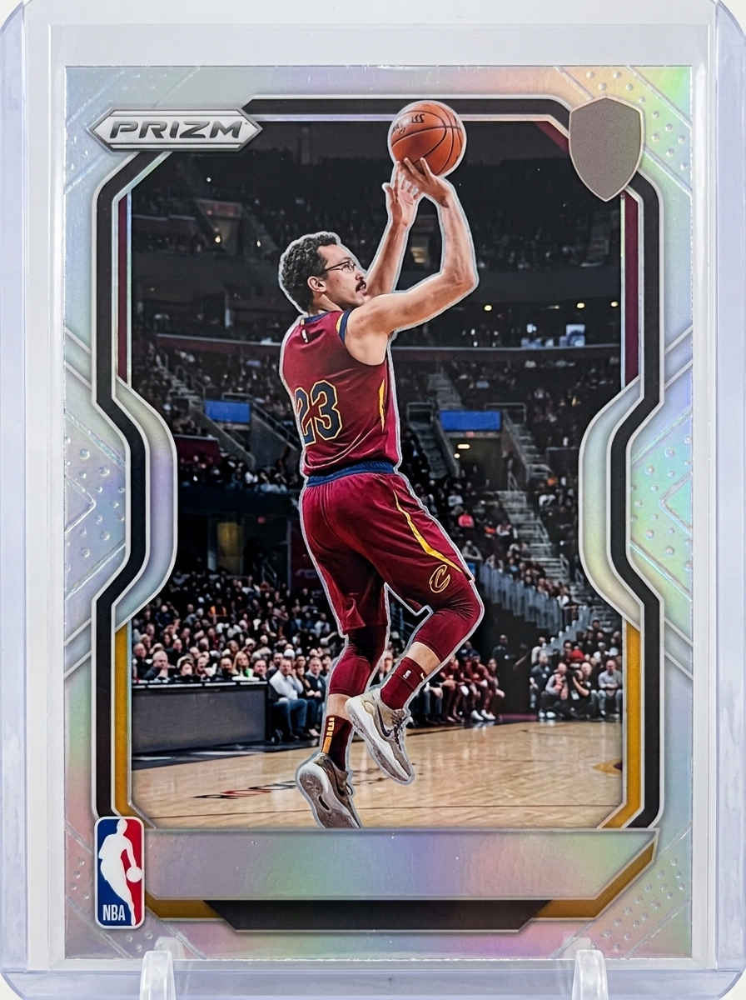
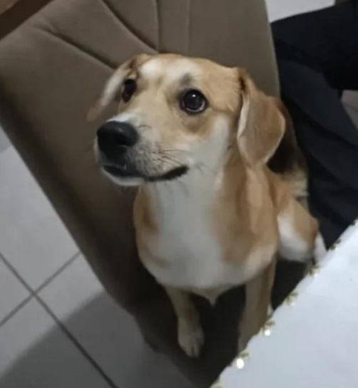
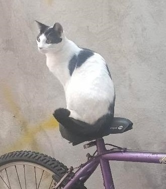
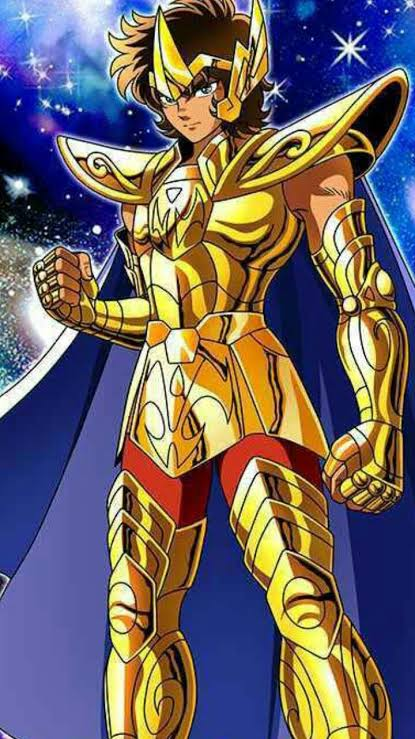
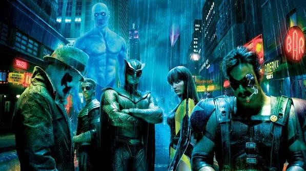
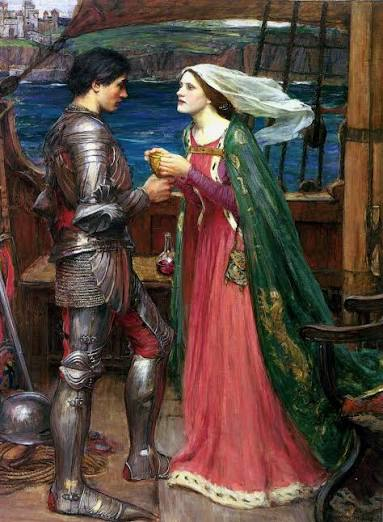
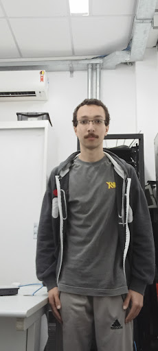

■ STATUS DO INDIVÍDUO ■
Se você está solteira, prossiga.
Se está em um relacionamento pedimos que feche esta aba imediatamente.
O departamento jurídico não se responsabiliza.
ERRO 402 — ACESSO NEGADO
Este conteúdo é destinado exclusivamente a visitantes solteiras.
Nossos advogados, sua paz mental e a integridade do seu relacionamento agradecem.
(Sim, nós levamos isso a sério.)
OK, MAS DO QUE ELE GOSTA?
Pode não parecer...
...mas diante de você está o
Fã nº 1 de Sonic. Nível: Ouriçado de carteirinha.
Se quiser ficar as próximas 5 horas da sua vida ocupada, é só perguntar a lore do Sonic pra ele.
Ponto positivo para encontros: assunto nunca vai faltar.
"Mas afinal, quem é o Sonic?" — essa pergunta pode iniciar uma explicação de duração indeterminada.
ELE É GEEK?
RPG OLD SCHOOL

SISTEMA Old Dragon
CLASSE FAVORITA Ladino
D20 Sempre à mão
Gosta de RPGs old school. Já foi mestre de campanha. Adora um horror cósmico em aventuras.
METROIDVANIAS

Amante de Metroidvanias.
Já zerou, Castlevania: Aria of Sorrow, Castlevania: Symphony of the Night, Dead Cells, Hollow Knight, Blasphemous, Bloodstained: Ritual of the Night, entre outros
QUADRINHOS
Colecionador apaixonado de quadrinhos.
⚠ Não pergunte sua opinião sobre Alan Moore.
ANIMAÇÕES

Apreciador de animações variadas.
FATO CIENTÍFICO: Samurai Jack sempre será a melhor.
Se você também gosta dessas coisas, temos um problema. Vamos ter assunto demais.
ELE É BASQUETEIRO?
Frequentador assíduo dos rachões de basquete da UNASP-SP.

1,65m. Não sabe fazer tabela direito. Não consegue arremessar de três.
POR ENQUANTO.
Mas ser café com leite não impede ele de tentar.
Pelo menos você nunca vai precisar fingir que está impressionada com uma enterrada.
GREEN FLAG?
Tem mais três cachorros na família
Mas ele só tem de fato essas duas fofuras

Peach Storm
Cachorra
A PODEROSA GATONA

Amy Rose
Gata
Isso provavelmente conta como green flag.
Mas existe um pequeno problema.
Você vai precisar conquistar a Peach primeiro.
Ela é quem realmente aprova as futuras pretendentes.
TÁ, O QUE MAIS TEM SOBRE ELE ?
COR FAVORITA
Azul
COMIDA FAVORITA
Estrogonofe
SIGNO

Sagitário. O melhor, salvou Atenas do Saga
FILME FAVORITO

Watchmen
LIVRO FAVORITO

Tristão e Isolda
NO TEMPO LIVRE
Toca bateria, lê e faz CTFs.
PRÓXIMA META
Terminar de tirar a CNH.
META PROFISSIONAL
Trabalhar como testador de penetração. (É um emprego de verdade, pode pesquisar.)
"Definido por muitos como tranquilo... porém excêntrico."
MAS ELE SERVIRIA COMO
Não podemos garantir que ele seja o homem dos seus sonhos.
Mas podemos garantir que ele provavelmente tem algum assunto aleatório para conversar.
OK.
Mas talvez ainda não saiba o suficiente.
Quer descobrir pessoalmente?
Obrigado por dedicar alguns minutos da sua vida para conhecer um cara que poderia simplesmente ter dito "oi".
Agora a decisão é sua.
Boa sorte.
— Equipe de Marketing do Guilherme
SEM FILTROS. SEM IA. SEM EXAGERO.

Se vir ele na rua pode dar um oi, as vezes ele não morde